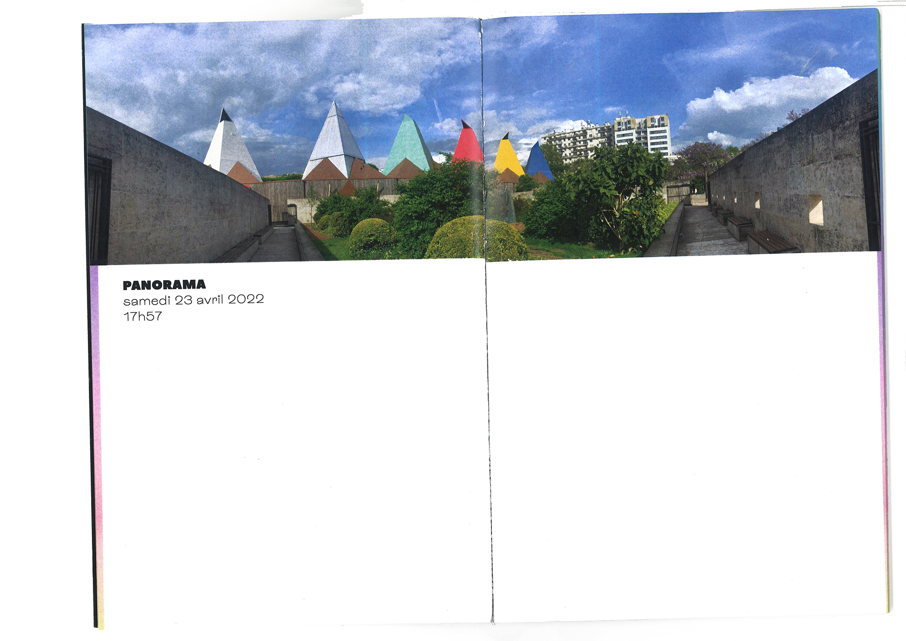
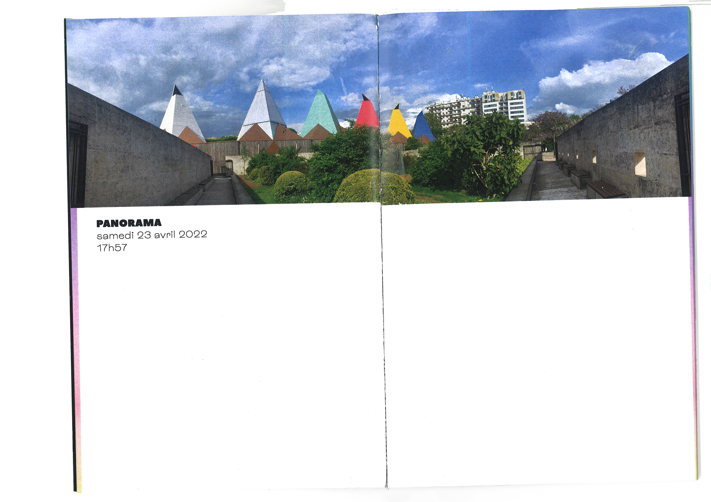

“ LES ÉTINCELLES DU PALAIS DE LA DÉCOUVERTE ”
Édition faite à partir de l'étude d'un lieu, ici en l'occurence les Étincelles du Palais de la Découverte, musée éphémère à Paris. Ce bâtiment éphémère fait face au Jardin Caroline-Aigle, petit square de verdure rempli de couleurs naturelles.
La juxatopisition des deux donne lieu à un résultat graphique interessant, qui a été étudié dans cette édition.
LES ÉTINCELELS DU PALAIS DE LA DÉCOUVERTES
2022
Laser
14x18 cm

 
